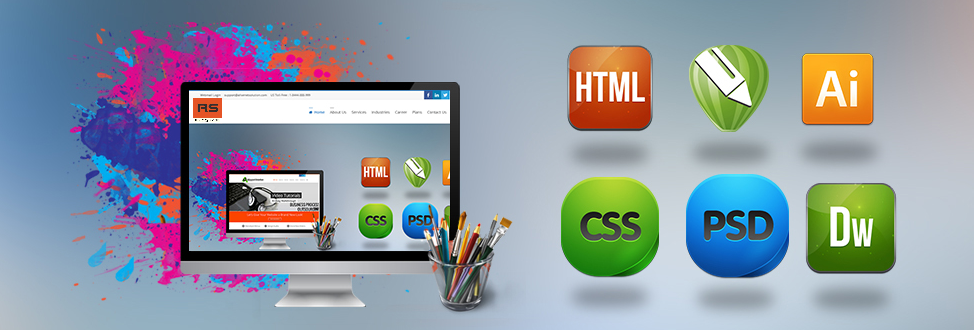

my home page

Graphic Design
Graphic Design is the process of visual communication and problem-solving through the use of typography,
photography, iconography and ilustraton. the field is considered a subset of visual communication and
communication design, but sometime the term "graphic design" is used synonymously. graphic designers
creat and combine symbols, images and text to form visual representations of ideas and messages.
Enquiry
Web Design
Web Design encompasses many different skills and disciplines in the production and
maintenance of wesites. the different areas of web graphic design; interface design;
authoring, including standardised code and proprietary software; user experience
design; and search engine optimization. often many individuals will work in teams
covering different aspects of the design process, although some designers will cover
them all. [1] the term "web design" is normally used to describe the design process
relating to the front-end (client side) design of a website including writing markup.
web design partially overlaps web engineering in the broader scope of web devlopment.
Web designers are expected to have an awareness of usabillity and if their role involves
creating markup then they are also expected to be up to date with web accessibility
guidelines.